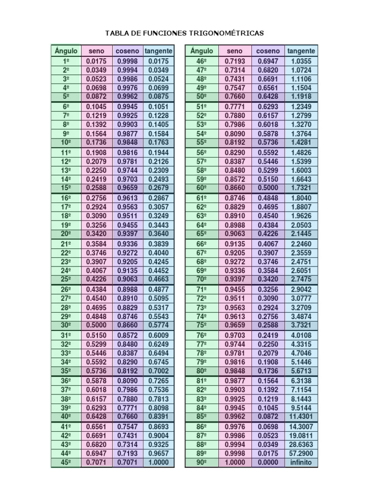
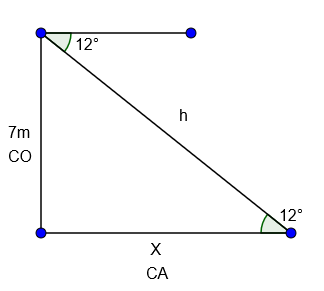
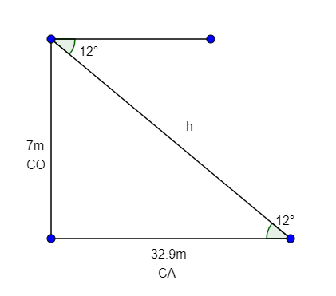
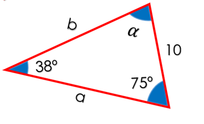

Representación simbólica y angular del entorno
El módulo de "Representación simbólica y angular del entorno" se ubica en el segundo
semestre y aborda las funciones trascendentes, a través de ejemplificar las funciones
exponenciales, logarítmicas y se enuncian y demuestran los postulados de la geometría.
Aplicación de las propiedades y funciones de los triángulos.
La trigonometría es usada para dividir a los sitios de excavación apropiadamente en áreas
iguales de trabajo. Las funciones trigonométricas pueden resultar útiles en las excavaciones.
Además, también pueden ser usadas para medir la distancia de sistemas de agua subterráneos.
Demostrar la relación de los triángulos de acuerdo con sus atributos y naturaleza
Las medidas de los tres ángulos interiores de un triángulo determina la
clasificación en Triángulo Acutángulo, Triángulo Rectángulo y Triángulo Obtusángulo.
- Triángulo Acutángulo: Cuando los tres ángulos interiores
son agudos.
- Triángulo Rectángulo: Cuando un ángulo es recto.
- Triángulo Obtusángulo: Cuando un ángulo es obtuso.
son agudos.
La relación de las medidas de los lados del triángulo determina la clasificación
en Triángulo Equilátero, Triángulo Isósceles y Triángulo Escaleno.
- Triángulo Equilátero: Las medidas de sus tres lados son iguales, es decir, los tres lados son
congruentes.
- Triángulo Isósceles: Las medidas de dos lados son iguales, es decir, dos lados son congruentes.
- Triángulo Escaleno: Todas las medidas de sus lados son diferentes, es decir, no tiene lados
congruentes.
congruentes.
congruentes.
Con la información anterior se tiene que todo triángulo recibe dos nombres, uno por cada clasificación. Por lo tanto se pueden tener los siguientes triángulos:
- Triángulo equilátero-acutángulo.
- Triángulo isósceles-acutángulo.
- Triángulo isósceles-rectángulo
- Triángulo isósceles-obtusángulo.
- Triángulo escaleno-acutángulo.
- Triángulo escaleno-rectángulo.
- Triángulo escaleno-obtusángulo.
Algunas propiedades de los triángulos:
- La suma de las medidas de los ángulos interiores es igual a 180° o ángulo llano.
- Si dos lados son congruentes entonces el triángulo tiene dos ángulos congruentes.
- A lado mayor se opone el ángulo mayor y al lado menor se opone el ángulo menor.
- Si un triángulo tiene dos ángulos congruentes entonces es triángulo isósceles.
- El lado mayor del triángulo siempre es de menor medida que la suma de las
medidas de los otros dos lados: Si los lados del triángulo son a, b, c
y c es el lado mayor, entonces c < a + b.
- En todo triángulo rectángulo los otros dos ángulos son agudos.
- En todo triángulo obtusángulo los otros dos ángulos son agudos.
medidas de los otros dos lados: Si los lados del triángulo son a, b, c
y c es el lado mayor, entonces c < a + b.
Triángulo rectángulo y el Teorema de Pitágoras:
El lado opuesto al ángulo recto recibe el nombre de hipotenusa y corresponde al lado de mayor longitud.
Los lados que forman el ángulo recto reciben el nombre de catetos.
Si los dos catetos son congruentes (de igual medida), el triángulo es rectángulo isósceles.
Si los dos catetos no son congruentes, el triángulo es rectángulo escaleno.
La medida de uno cualquiera de los catetos siempre es menor que la medida de la hipotenusa.
Pitágoras (matemático griego, de los años 572 a.C – 496 a.C) descubrió una propiedad interesante de los
triángulo rectángulos que se conoce como TEOREMA DE PITÁGORAS:
En todo triángulo rectángulo, el cuadrado de la medida de la hipotenusa es igual a la suma de los cuadrados de la medida de cada cateto:
(Hipotenusa)2 = (Cateto1)2 + (Cateto2)2
Esta propiedad de los triángulos rectángulos tiene muchas aplicaciones en la ciencia, el arte, la ingeniería y la arquitectura.
Identificación de razones y funciones trigonométricas
Las razones trigonométricas de un ángulo agudo en un triángulo rectángulo
son las siguientes:
Seno: Razón entre el cateto opuesto al ángulo y la hipotenusa.
Coseno: Razón entre el cateto adyacente al ángulo y la hipotenusa.
Tangente: Razón entre el cateto opuesto al ángulo y el cateto adyacente.
Tabla de Coseno, Seno y Tangente
Ejemplo de problemas
Del siguiente triangulo... encuentra el valor del cateto adyacente (x)
utilizando las formulas correspondientes.

1.Para resolver el ejercicio debemos conocer las siguientes formulas:
tan(a) = co/h y cos(a) = ca/h
2.Para calcular el valor de x observamos los valores que tenemos
3.En esta caso usaremos:
tan(a) = co/h
4.Como no reconocemos el valor de la hipotenusa, despejamos la formula:
h = co/tan(a)
5.Ahora sustituimos los valores:
h = 7m/tan(12)
6.Luego realizamos la operacion y tenemos que...
h = 7m/tan(12) = 32.93
7.El valor de x es:
x = 32.93m

Ejercicios para resolver
Ejecicio 1: Problema del Seno
Tenemos el siguiente triangulo con medidas en la cual debemos calcular el lado "b"
